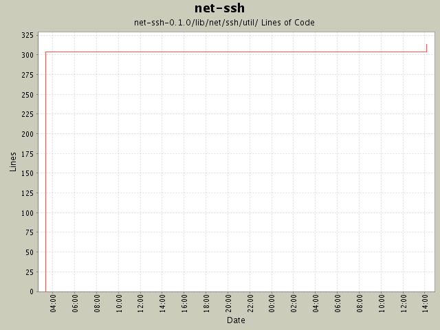

Summary Period: 2004-08-10 to 2004-08-11
[root]/net-ssh-0.1.0/lib/net/ssh/util

Total Lines Of Code:
313 (2005-01-07 15:12)
| Author | Changes | Lines of Code | Lines per Change |
|---|---|---|---|
| minam | 2 (100.0%) | 321 (100.0%) | 160.5 |
Fixed some minor bugs in the buffer routines, and added some unit tests.
17 lines of code changed in:
Changed buffer implementation and refactored it to a new module. Added
support for tunneling via HTTP proxy.
304 lines of code changed in:
Generated by StatCVS 0.2.3